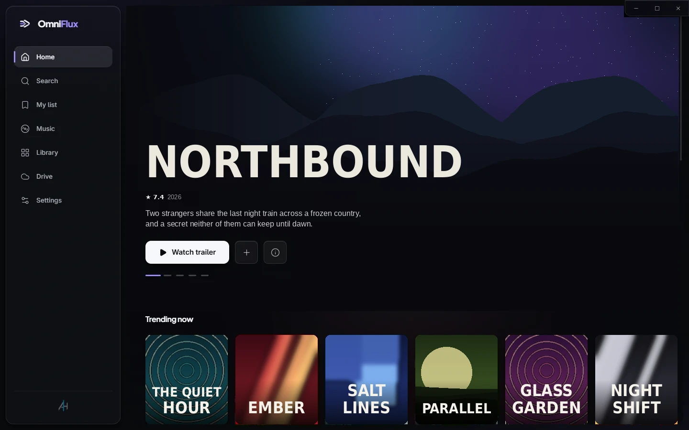
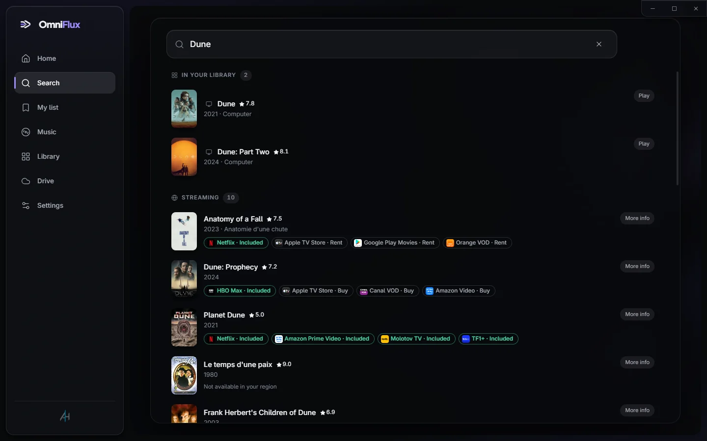
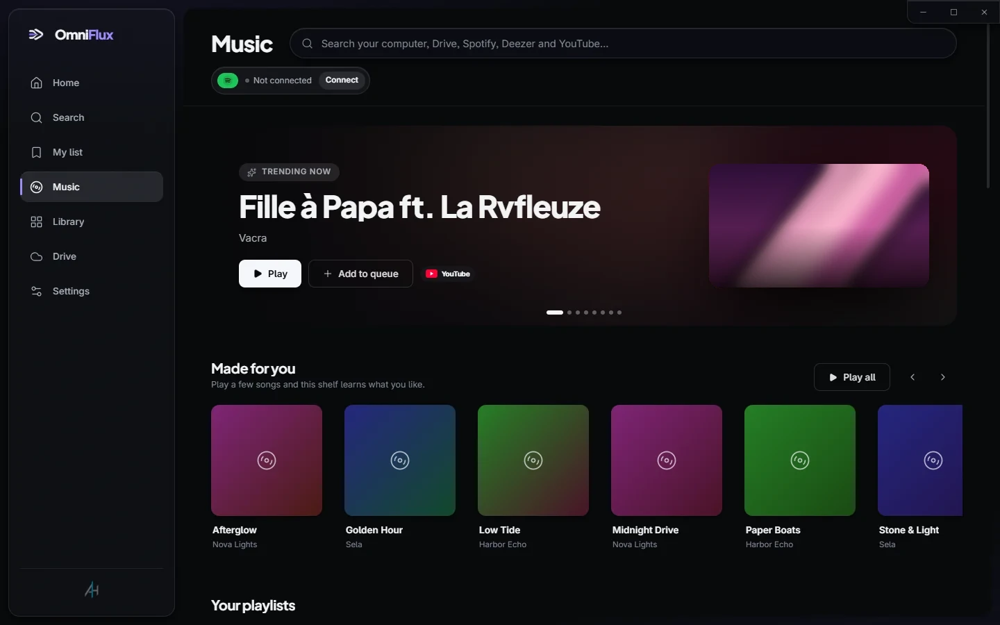
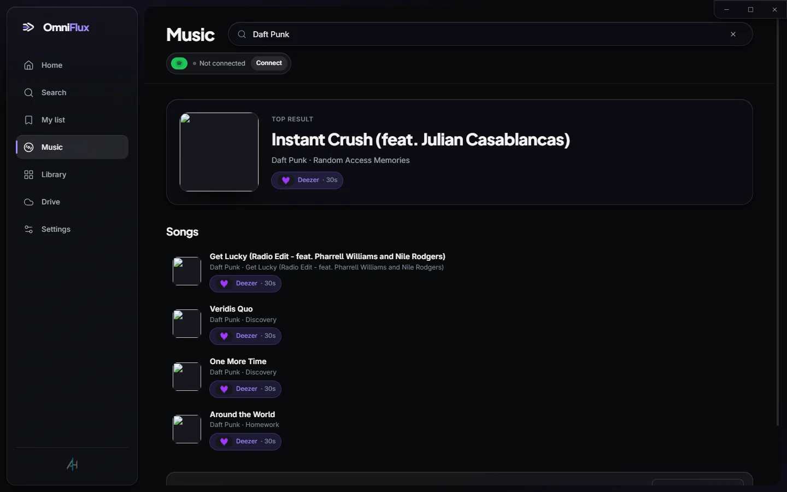
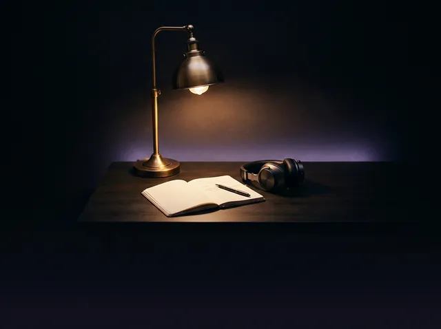
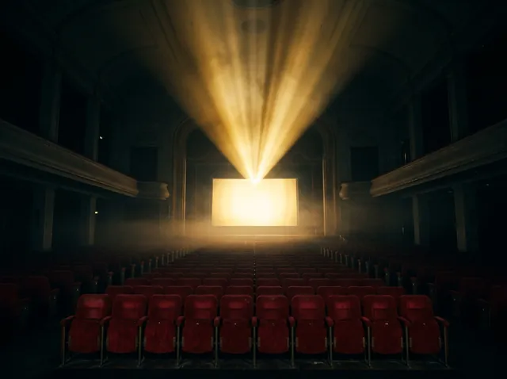
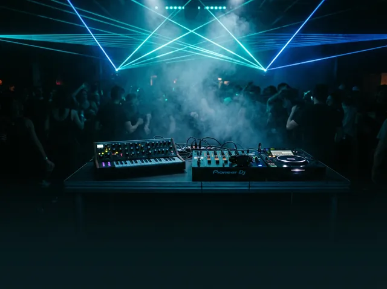

Plays everything
Built on mpv — MKV, 4K HDR, HEVC, AV1, FLAC, subtitles of every kind. No codec packs, no "unsupported format".
Find any movie or series and see instantly which streaming platform has it. Watch the trailer, save it to your list — or play your own files, Google Drive, YouTube and music right here.

Type a title once. OmniFlux searches your own library and every streaming platform in your country, and tells you where it's included, where to rent it and where to buy it.

No codec packs, no media server, no account on our side. Point it at a folder and it does the rest.
Built on mpv — MKV, 4K HDR, HEVC, AV1, FLAC, subtitles of every kind. No codec packs, no "unsupported format".
File names become titles with posters, years, ratings, seasons and episodes — in your language.
Stream movies straight from your Drive with instant seeking. Watched parts are cached, so going back is free.
Picture-in-picture, equalizer, subtitle and audio sync, resume where you stopped — the details you expect.
No server, no profile, no tracking. Recommendations are computed on your PC and never leave it.
English, French, Spanish, German, Italian, Portuguese, Arabic and Hebrew. Titles and summaries come in your language.
A home screen that learns what you like — and a queue that plays a local FLAC, then a YouTube video, then a Drive file, without switching apps.



Focus
Soundtracks
ElectronicSome services limit independent apps. We'd rather tell you up front.
Fully available to everyone. YouTube plays in the official embedded player, including its ads.
Search the full catalog and play 30-second previews, clearly marked, without an account.
Spotify now limits independent apps to a handful of approved accounts. Everyone else can use every other source.
Until Google finishes verifying OmniFlux, sign-in shows an "unverified app" screen. Click Advanced → Continue. OmniFlux only asks for read-only access.
Every line of OmniFlux is on GitHub. Read it, build it, improve it. Electron, React and TypeScript on top of mpv, with 340+ automated tests.
# build from source git clone https://github.com/5645hm-a11y/omniflux-player cd omniflux-player npm install # also fetches mpv cp .env.example .env # your own API keys npm run dev
Yes. No subscription, no ads of our own, no account. The code is GPL-3.0.
OmniFlux isn't code-signed with a paid certificate yet. Click "More info" → "Run anyway". The source for every release is on GitHub.
Yes. New versions download in the background and install the next time you close the app. Your library and settings are kept.
Only on your computer. Sign-ins to Google, Spotify or Deezer go directly to them; OmniFlux has no server.
No — OmniFlux shows you where a title is available and opens it on that service. Streaming platforms keep their content in their own players.
Windows only for now. A mobile app is on the roadmap.